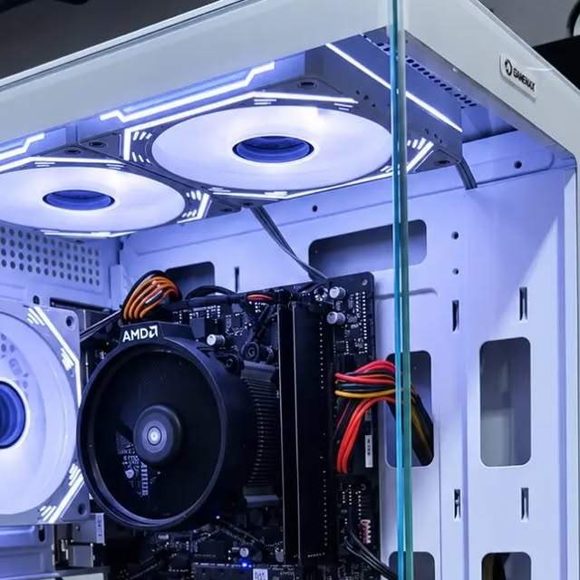

Sistemas operativos
Configuración del sistema, instalación de programas y actualización de drivers.
01 / SOPORTE PARA TU PC
Servicio técnico de PC para sistemas operativos, optimización, mantenimiento, reparaciones y consultas por desbloqueos.
Contanos qué está pasando con tu equipo. Eze Tech ofrece atención presencial y remota, según el caso.
02 / EMPEZÁ POR ACÁ
No hace falta que sepas qué falla. Elegí lo que más se parece a tu caso y prepará un mensaje claro para Eze Tech.
03 / LO QUE HACEMOS
Desde el sistema hasta el estado general del equipo: explicanos qué necesitás y vemos el próximo paso.
Configuración del sistema, instalación de programas y actualización de drivers.
Una puesta a punto para revisar el funcionamiento y mejorar el uso de tu equipo.
Contanos cuál es la falla para que Eze Tech pueda evaluar tu caso.
Si tenés un problema de acceso a tu equipo, escribinos y contanos qué sucede.

FOTO PUBLICADA POR EZE TECHDEL PERFIL DE EZE TECH
En su presentación, Eze Tech pone el foco en el software y en mejorar la experiencia de uso de cada computadora.
04 / MODALIDADES
El perfil de Eze Tech informa atención presencial y remota. La modalidad adecuada depende de lo que le pase a tu PC.
Consultar modalidadConsultá si tu caso se puede resolver sin mover el equipo.
Escribinos para coordinar según tu equipo y tu ubicación.
05 / PREGUNTAS FRECUENTES
No. Contanos qué está pasando o desde cuándo notás el problema. Con esa información podemos empezar la conversación.
Sí, Eze Tech informa atención remota. Escribinos y te decimos si esa modalidad aplica a tu caso.
Indicá qué equipo tenés y qué mensaje o bloqueo aparece. Así pueden evaluar la consulta y explicarte los pasos posibles.
Consultá la zona de atención por WhatsApp para coordinar la modalidad presencial.
TU PRÓXIMO PASO
Contanos qué pasa y empezamos por ahí.